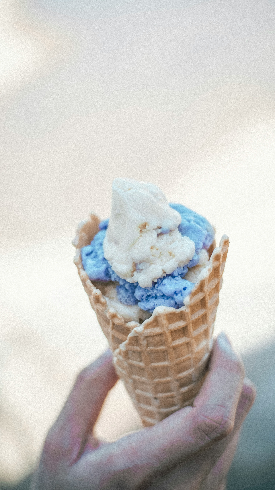
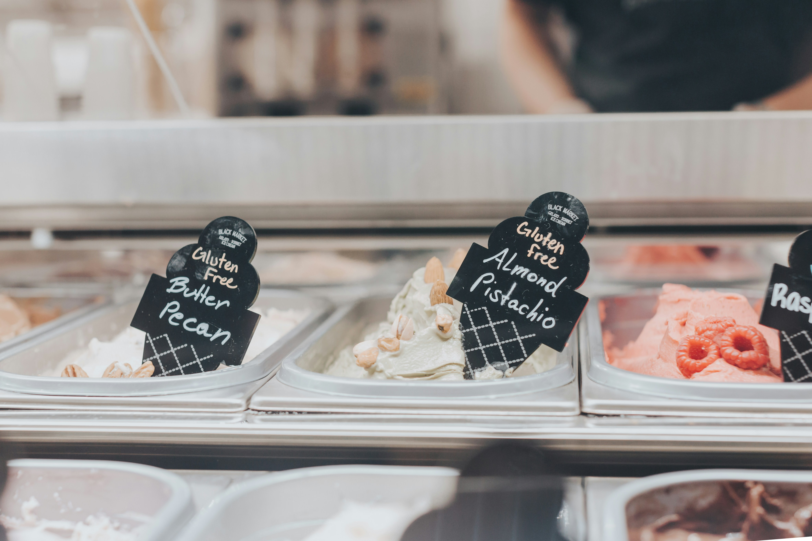
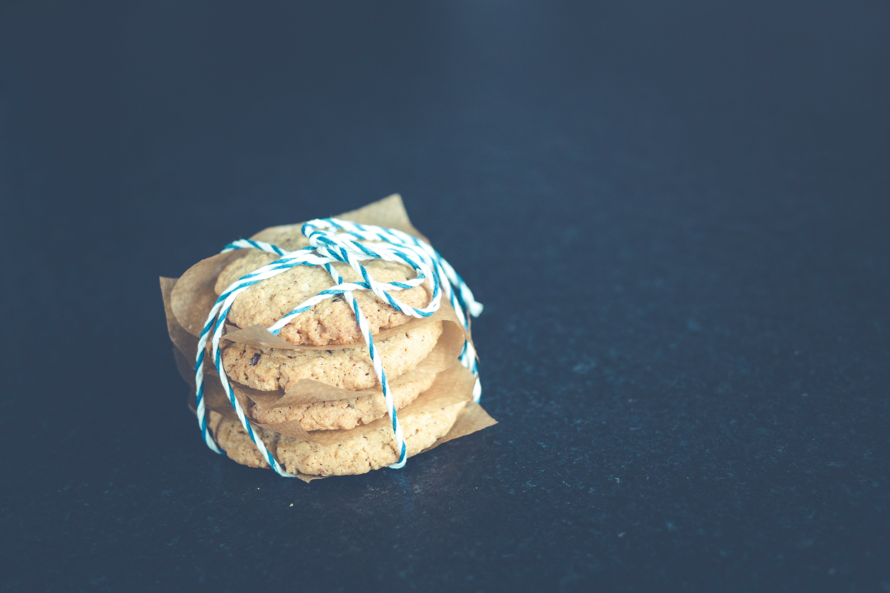

A Blast From the Past!
Missing your favorite ice cream shop?
Two Scoop is here to give you a pinch of nostalgia in every cone. Our shop has been family owned for three generations and works in collaboration with local dairy farms. Come and to add a little sweetness to your day!
Flavors
Including our seasonal specialties, we offer up to 50 flavors at a time! Feel free to mix and match to create your favorite ice cream combination.
Treats
Not a fan of ice cream? No problem! We also offer a wide selection of treats, including cookies, cupcakes and macarons!
Catering
We offer dessert catering for birthdays, weddings and more! Please contact us via email or phone for package information.